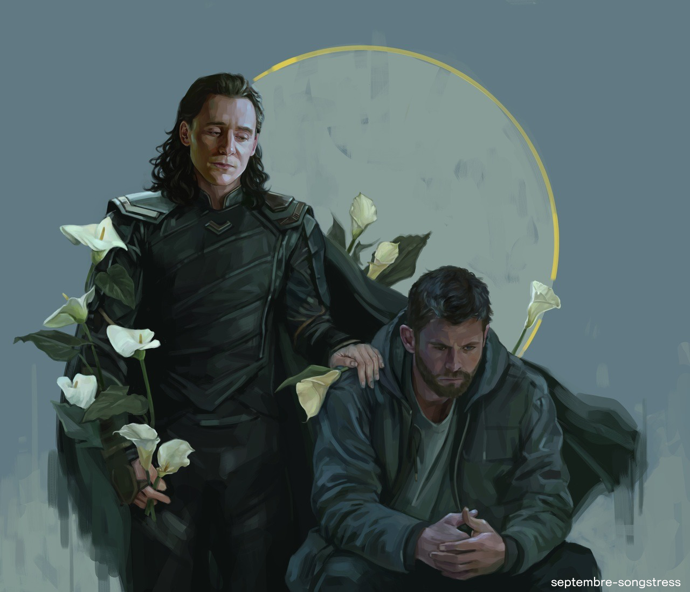
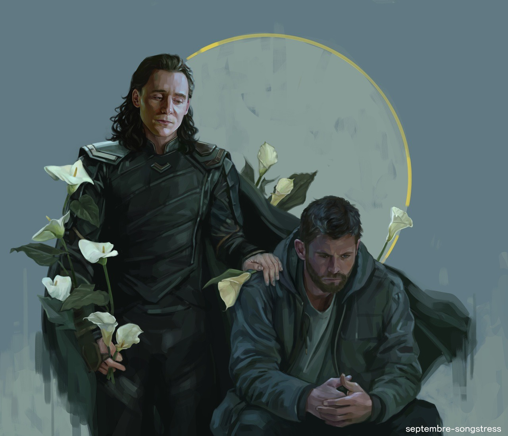

Thor Odinson, more commonly known as Thor, and sometimes by his title as the God of Thunder,
is a fictional character portrayed by Chris Hemsworth in the Marvel Cinematic Universe (MCU)
media franchise, based on the Marvel Comics character of the same name and the
Norse mythological god of the same name.
In the MCU, he is depicted as one of the
most powerful Asgardians, an ancient alien civilization with long ties to Earth, who humans
consider to be gods. Thor wields a powerful hammer called Mjolnir, and is initially depicted as
the arrogant heir to the throne of Asgard whose brash behaviors causes turmoil among
the Nine Realms under Asgard's protection.

 
